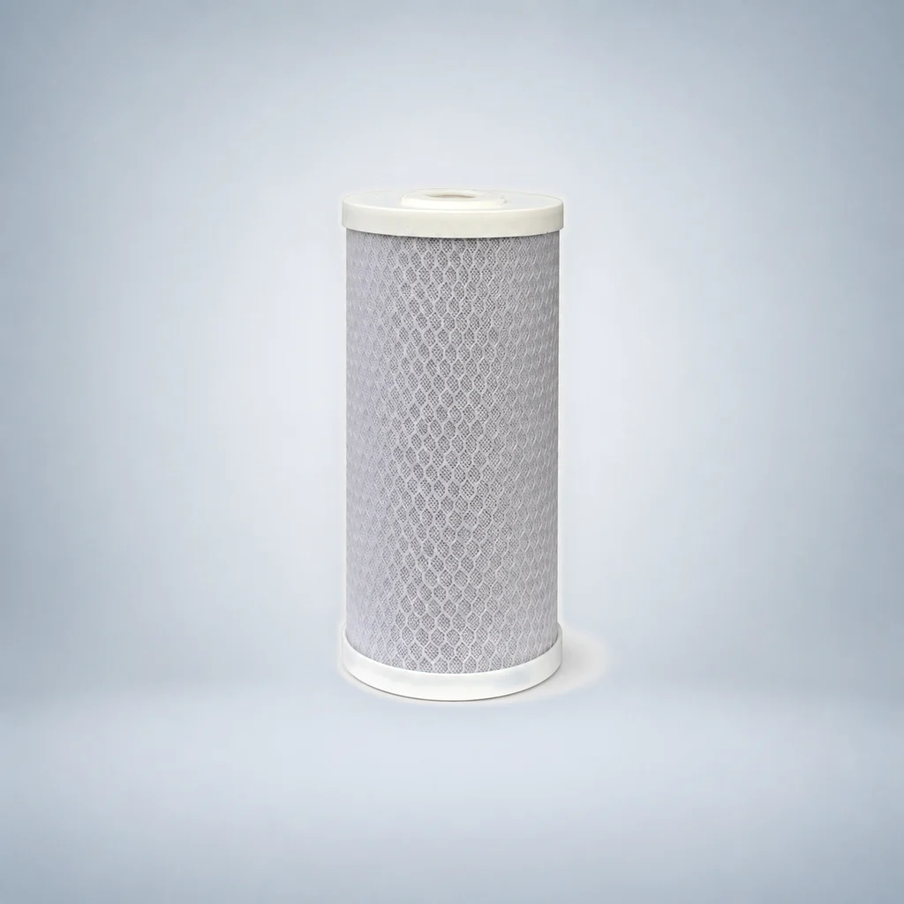
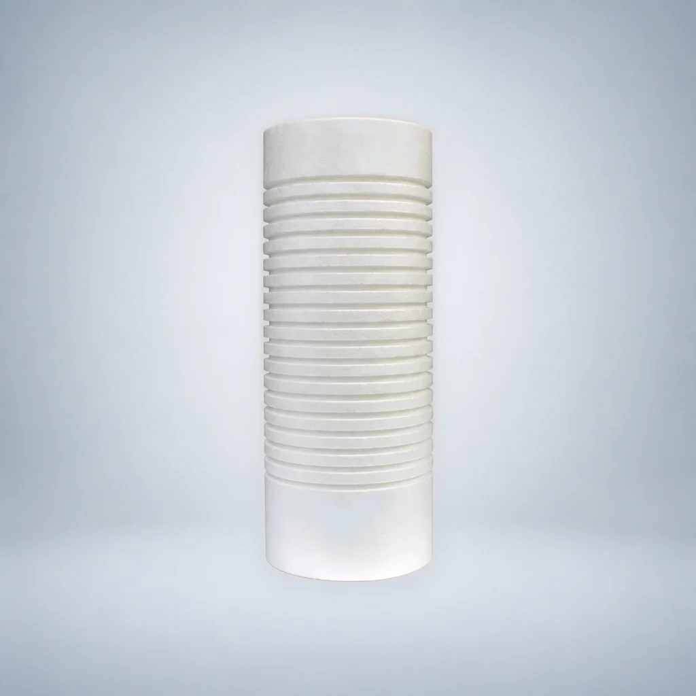
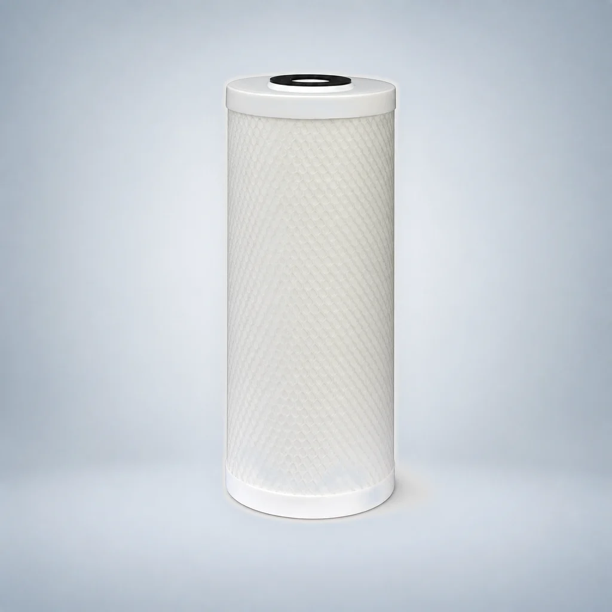

20-Inch Three-Stage Big Blue Water Filter System
- System type
- 3 × Big Blue
- Housing class
- 20″
- Filtration stages
- 3
Use this guide to compare Big Blue sediment, granular carbon, carbon block, sintered carbon and composite cartridge configurations. The matrix keeps 10-inch and 20-inch formats, carbon specifications, additives and supplied nominal dimensions separate for accurate OEM quotation.
Compare the listed models and open a detail page. Model records are counted separately from configurable dimensions; suitability must be confirmed for your project.






Choose the requirements you already know. A configuration with an unstated source specification is marked for confirmation instead of being treated as an exact match.
Select up to three configurations. You can copy a structured RFQ summary or continue to the inquiry form with the verified IDs and filters prefilled.
Scope: This tool narrows the reviewed OEM configuration list. Final connection, compatibility, dimensions and project requirements must still be confirmed before quotation.